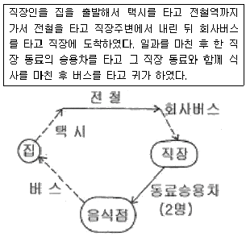
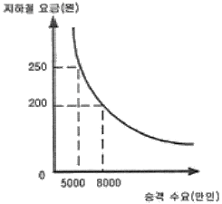
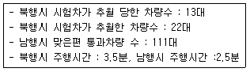
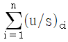
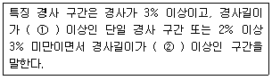
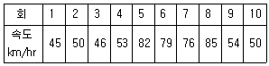
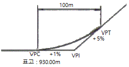
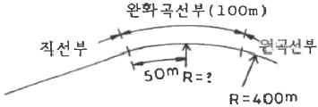
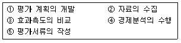
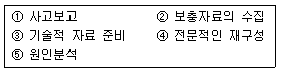

교통기사 (2006-03-05 기출문제)
1과목: 교통계획
1. 다음 한 직장인의 하루 생활동안에 발생시킨 목적 통행수는 얼마인가?

- 6
- 5
- 4
- 3
(정답률: 알수없음)

2. 교통수단선택을 위하여 로짓모형을 활용할 때 효용함수가 U=α×(통행시간)+β×(통행비용)으로 표시될 경우 통행시간가치는 어떻게 표현되는가?
- Ⅰα-βⅠ
- αㆍβ
- α/β
- α+β
(정답률: 알수없음)
3. 통행비용이 가장 적게 소요되는 경로를 택한다는 기본 전제를 이론의 배경으로한 통행배분(traffic assignment) 모델은?
- All-or-Nothing Model
- Entropy Model
- Flow-independent Model
- OD pair Model
(정답률: 알수없음)
4. 지하철 요금과 승객 수요간의 그래프가 다음과 같을 경우 요금이 200원에서 250원으로 오를 때 승객 수요 탄력성은?

- -1.0
- -1.5
- -2.0
- -2.5
(정답률: 알수없음)
5. TSM(Transportation System Management)의 개선 유형 중 차량통행 수요를 감소시키는 효과를 주는 방법은?
- 카풀(carpooling)유도
- 신호주기의 개선
- 교차로에서의 도류화
- 도로 기하구조 개선
(정답률: 알수없음)
6. 택시 수요함수를 아래 공식과 같다고 할 때 지하철 요금을 20% 인상하였을 경우 택시 수요는? (단, 택시 및 지하철 요금은 각각 1이라고 가정)
- 택시수요가 약 5% 증가한다.
- 택시수요가 약 7% 증가한다.
- 택시수요가 약 9% 증가한다.
- 택시수요가 약 11% 증가한다.
(정답률: 알수없음)
7. 교통체계는 토지이용, 교통공급(transportation supply), 교통(traffic)으로 구성되어 있다고 정의한 사람은?
- Perkin
- Manheim
- Black
- Tomzinis
(정답률: 알수없음)
8. 다음 중 승객의 입장에서 대중교통 수단을 평가할 경우 적절한 판단 기준은?
- 정시성
- 승객수요
- 버스용량
- 경제적 효율성
(정답률: 알수없음)
9. 다음 중 자료수집의 용이성과 자료분석의 편의성을 위한 교통존(traffic zone)의 설정기준에 적합하지 않는 것은?
- 각 존은 가급적 동질적인 토지이용이 포함되도록 한다.
- 행정구역을 가급적 일치시킨다.
- 간선도로가 가급적 존경계선과 일치하도록 한다.
- 정밀한 분석을 위해 가급적 존을 크게 한다.
(정답률: 알수없음)
10. 다음 중 4단계 교통수요 추정방법에 사용되는 모형이 단계별로 알맞게 제시된 것은?
- 원단위법-프라타모형-로짓모형-최단경로법
- 간섭회귀모형-원단위법-프로빗모형-FHA모형
- 프로빗모형-카테고리모형-로짓모형-용량제약최단경로법
- 회귀분석법모형-프로빗모형모형-간섭회귀모형-최단경로법
(정답률: 알수없음)
11. P요소법(Parking space factor method)으로 도심 주차수요를 추정할 때 다음 중 필요하지 않는 자료는?
- 승용차 이용 출발통행량
- 주간의 통행 집중율
- 주차장 이용 효율
- 건물이용자 중 승용차이용률
(정답률: 알수없음)
12. 다음 중 장기교통 계획의 특징이 아닌 것은?
- 소수의 대안
- 교통수요가 비교적 고정
- 시설 지향적
- 서비스 지향적
(정답률: 알수없음)
13. 도시가로의 기능별 배치에서 주간선도로와 주간선도로의 배치간격으로 가장 적절한 기준은?
- 3,000m 내외
- 1,000m 내외
- 500m 내외
- 100m 내외
(정답률: 알수없음)
14. 사람통행 실태조사를 보완 및 검증하기 위하여 실시하는 조사는?
- 속도조사
- 시험차주행조사
- 터미널승객조사
- 스크린라인조사
(정답률: 알수없음)
15. 다음 중 인구, 자동차 보유대수 등의 사회, 경제지표를 예측하는데 사용될 수 있는 모형식은?
- 전환곡선식
- 로지스틱곡선식
- 엔트로피모형식
- 미국도로국(BPR)모형식
(정답률: 알수없음)
16. 주어진 도로 조건에서 15분 동안 무리없이 최대로 통과할 수 있는 승용차 교통량을 1시간 단위로 환산한 값은?
- 최대 서비스 교통량
- 도로 용량
- 1시간 환산 교통량
- 승용차 환산 교통량
(정답률: 알수없음)
17. 일반적으로 교통기관의 서비스 수준에 가장 둔감한 통행 목적은?
- 업무통행
- 통근통행
- 쇼핑통행
- 여가통행
(정답률: 알수없음)
18. 2km 남-북 양방향 도로 구간의 교통량 조사를 위해 이동차량기법을 적용했다. 그 결과가 다음과 같을 때 북쪽으로 향하는 교통류의 교통량은?

- 1,020대/시
- 760대/시
- 1,440대/시
- 1,210대/시
(정답률: 알수없음)
19. 지구교통개선사업(STM : Site Transportation Management)의 주요사업내용이 아닌 것은?
- 대중교통이용증진 및 간선도로의 교통소통원활화
- 교통안전 증진
- 보행 및 자전거통행 환경개선
- 주차시설정비 및 주차운용방법 개선
(정답률: 알수없음)
20. 다음 중 통행분포(Trip Distribution) 단계에 사용되는 모형은?
- 회귀분석모형
- 중력모형
- 로짓모형
- All or nothing 모형
(정답률: 알수없음)
2과목: 교통공학
21. 황색 신호 길이를 계산하기 위해 필요한 차량의 임계 감속도는 보통 얼마인가?
- 3m/s2
- 4m/s2
- 5m/s2
- 6m/s2
(정답률: 알수없음)
22. 속도누적분포곡선에서 교통규제상의 최대 속도는 다음 중 어떤 때의 속도를 취하는 것이 통례인가?
- 100 백분위속도(percentile speed)
- 85 백분위속도(percentile speed)
- 50 백분위속도(percentile speed)
- 25 백분위속도(percentile speed)
(정답률: 알수없음)
23. 어떤 2현시 체계의 신호교차로의 신호주기시간이 100초이고 총손실시간은 8초일 때 교차로의 임계 v/c비는? (단, 이 때

의 값은 0.8이다,)- 0.92
- 0.74
- 0.87
- 0.83
(정답률: 알수없음)
24. 고속도로의 엇갈림 구간에 대한 설명 중 옳지 않은 것은?
- 엇갈림구간의 교통류 특성에 영향을 미치는 도로 기하구조 요소에는 엇갈림구간의 형태, 길이, 차로수가 있다.
- 엇갈림 구간의 길이는 본선-연결로 엇갈림 구간의 경우 최소 200m를 넘게 하는 것이 통행 안전상 비람직하다.
- 엇갈림 구간의 효과척도로는 엇갈림 교통류의 공간 평균속도를 사용한다.
- 엇갈림 구간의 길이는 물리적인 고어부 사이의 거리로 한다.
(정답률: 알수없음)
25. 교통조사를 실시하기 위해 설정되는 폐쇄선(cordon line)에 대한 설명 중 옳지 않은 것은?
- 가급적 행정구역과 일치시킨다.
- 폐쇄선을 횡단하는 도로나 철도는 최소가 되도록 한다.
- 도시두변의 위성도시는 가급적 폐쇄선내에 포함시키지 않는다.
- 주변에 동이 위치하면 폐쇄선 내에 포함하도록 한다.
(정답률: 82%)
26. 다음의 ()안에 들어갈 말로 알맞은 것은?

- ①100m ②200m
- ①200m ②500m
- ①500m ②1000m
- ①1000m ②2000m
(정답률: 알수없음)
27. 다음 중 교통 감응식(Traffic Actuated Signal) 신호등의 장점이 아닌 것은?
- 교통량의 단기변화에 대처 가능
- 일반적으로 교차로 지체를 줄일 수 있음
- 설치비용이 싸고, 유지관리가 용이함
- 녹색신호 시간을 연속적으로 재분배하여 용량을 증대시킴
(정답률: 100%)
28. 어느 도시부 교차로에서 첨두 1시간에 대하여 교통량을 조사하였다. 조사결과 각각 15분 간격으로 725대, 492대, 630대, 495대로 집계 되었다면 첨두시간계수(PHF)는 얼마인가?
- 725
- 492
- 0.81
- 0.31
(정답률: 알수없음)
29. 고속도로의 기분구간 용량분석시 주 효과척도로 사용되는 것은?
- 밀도
- 지체율
- 교통량
- 속도
(정답률: 알수없음)
30. 신호교차로가 90초의 주기로 운영되고, 임계차로군의 교통량비의 합이 0.73일 때, 교차로 전체의 임계 V/c비 값으로 0.79를 얻었다. 이 교차로의 주기당 총 손실 시간은?
- 7초
- 8초
- 9초
- 10초
(정답률: 알수없음)
31. 다음 중 도로의 기능별 분류에 속하지 않는 것은?
- 집산도로
- 지방도로
- 간선도로
- 국지도로
(정답률: 알수없음)
32. 한 도로의 특정구간에서의 차두거리(spacing)가 70m, 속도는 60km/hr일 때 차두시간(headway)은 몇 초인가?
- 3.7초
- 4.2초
- 4.7초
- 5.2초
(정답률: 알수없음)
33. 시간평균속도(Time mean speed)와 공간평균속도(space mean speed)에 대한 설명 중 틀린 것은?
- 시간평균속도는 공간평균속도보다 크거나 같다.
- 공간평균속도는 지정속도와 그 뜻이 같다.
- 시간평균속도는 고정된 지점에서 단위 시간에 관측된 차의 평균속도이다.
- 구간내의 모든 차가 동일 속도로 운행하고 있다면 시간평균속도와 공간평균속도는 같다.
(정답률: 알수없음)
34. 완화곡선의 길이는 운전자가 편경사의 변화 및 완화곡선에의 진입을 느끼면서 최소한 몇 초를 주행하는 거리인가?
- 5초
- 4초
- 3초
- 2초
(정답률: 알수없음)
35. 연속된 교차로에서 첫 번째 신호등의 녹색신호 시작 시간과 두 번째 신호등의 녹색신호 시작 시간과의 시간 간격을 무엇이라고 하는가?
- 옵셋(offset)
- 유효녹색시간
- 현시
- 주기
(정답률: 알수없음)
36. 도로의 설계기준을 수립하거나 도로 분류에 사용되며, 적정성을 평가하고 개선 및 유지관리 계획을 수립하는데 기초가 되는 교통량 자료는?
- 첨두시간 교통량
- 총 통행량
- AADT
- 30th 설계시간 교통량
(정답률: 알수없음)
37. 황색신호 시간 길이의 결정에 관계 없는 것은?
- 교차로의 폭
- 신호현시의 수
- 차량의 감속도
- 운전자의 반응시간
(정답률: 알수없음)
38. 운전자의 반응시간이 2초, 평균 감속도가 2m/sec2일 경우 30m/sec로 주행하는 차량의 최소정지거리는?
- 285m
- 60m
- 225m
- 510m
(정답률: 알수없음)
39. 교통류의 기본적인 요소가 아닌 것은?
- 교통량
- 속도
- 밀도
- 시간
(정답률: 알수없음)
40. 5분 동안 어떤 한 지점을 통과하는 차량의 속도를 측정한 결과가 다음 표와 같을 때 공간 평균 속도는?

- 44km/hr
- 48km/hr
- 54km/hr
- 58km/hr
(정답률: 알수없음)
3과목: 교통시설
41. 버스의 최대운행속도가 16.7m/sec, 차량가속도 2.0m/sec2, 차량감속도는 0.5m/sec2, 정류장당 승객수가 3명, 탑승 소요시간이 3초일 경우 적정 버스 정류장 간격을 최적 재차인원에 의한 방법으로 구하면?
- 647.5m
- 747.5m
- 847.5m
- 947.5m
(정답률: 알수없음)
42. 도시고속도로의 중앙분리대 설치시 최소폭은?
- 1.5m
- 2.0m
- 2.5m
- 3.0m
(정답률: 알수없음)
43. 다음 그림과 같은 종단곡선이 있다. 이 종단곡선의 시점(VPC)로부터 20m 지점에서의 표고를 구하면?

- 930.25m
- 930.28m
- 930.31m
- 930.33m
(정답률: 알수없음)
44. 차도의 진행방향에 대하여 설계기준 자동차 길이의 반 정도만 여유가 있으면 주차할 수 있고, 주차를 하는 자동차가 동시에 움직일 경우에는 각 자동차 간격을 줄일 수 있는 이점이 있는 주차방식은?
- 30° 주차방식
- 60° 주차방식
- 90° 주차방식
- 평행 주차방식
(정답률: 알수없음)
45. 우리나에서 지방지역 주요도로에 적용할 설계시간계수(K)값은?
- 200번쨰
- 100번쨰
- 50번쨰
- 30번쨰
(정답률: 알수없음)
46. 다음 중 교차로의 좌회전 차로 길이의 결정에 영향을 주지 않는 것은?
- 좌회전 교통량
- 차량의 감속도
- 차량 길이
- 차로폭
(정답률: 알수없음)
47. 고속도로에서 우측길어깨(갓길)의 폭원이 최대 얼마 미만일 경우 비상주차대를 설치해야 하는가?
- 1.5m
- 2.0m
- 2.5m
- 3.0m
(정답률: 알수없음)
48. 자주식 주차장으로서 지하식 또는 건축물식에 의한 노외주차장에는 바닥으로부터 85cm의 높이에 있는 지점이 평균 몇 룩스이상의 조도를 유지할 수 있는 조명장치를 설치해야 하는가?
- 40룩스
- 50룩스
- 60룩스
- 70룩스
(정답률: 알수없음)
49. 도로를 국도, 지방도, 군도로 구분하는 가장 큰 목적은?
- 적합한 설계기준의 적용
- 원활한 교통운영
- 노선계획
- 관리책임자의 지정
(정답률: 알수없음)
50. 노면의 종류에 따른 횡단경사가 틀리게 짝지어진 것은?
- 간이포장도로 : 2.0~4.0%
- 비포장도로 : 3.0~6.0%
- 아스팔트포장도로 : 1.5~2.0%
- 시멘트콘크리트포장도로 : 1.0~1.5%
(정답률: 70%)
51. 완화곡선을 설치하지 않는 평면곡선에 편경사를 설치하려고 한다. 이 경우 원곡선이 시작하기전 직선상에는 전체 편경사의 얼마가 설치되어야 하는가?
- 1/3
- 2/3
- 2/5
- 1/2
(정답률: 알수없음)
52. Park and Ride 주차시설을 옳게 설명한 것은?
- 공원이나 유원지에서 입장료를 낸 사람에게 개방된 주차장
- 대중 교통 연계지점에 건설된 주차장으로 이곳에 승용차를 주차시킨 후 대중 교통으로 갈아 타게 하기 위해서 만든 주차장
- 대규모 유원지, 상가 등에 설치된 주차장
- 공원내에서 공원내를 운행하는 셔틀버스에 갈아타기 위해 만든 주차장
(정답률: 알수없음)
53. 운전자가 교통안내표지를 읽고 자기의 목적에 합당하게 적용하려면 보통 8초가 소요된다고 한다. 설계속도가 80lm/h인 도로에서 진입로 전방 몇 m에 표지를 설치해야 하는가?
- 150m
- 160m
- 170m
- 180m
(정답률: 알수없음)
54. 다음 도로 중 접근성만을 위한 도로는?
- 구획가로
- 쿨데삭(cul-de-sac)
- 국지도로
- 보조간선도로
(정답률: 알수없음)
55. 도로평면 선형을 직선-완화곡선-원곡선부로 하고, 완화곡선을 클로소이드 곡선으로 적용할 경우, 완화곡선의 길이가 100m, 원곡선부의 반경이 400m라면 직선부와의 교점에서 완화곡선상의 50m 떨어진 지점의 곡선반경은?

- 800m
- 700m
- 633m
- 600m
(정답률: 알수없음)
56. 설계속도는 도로의 기하구조를 검토하고 결정하는데 기본이 되는 속도이다. 다음에서 설계속도와 직접적인 관계가 없는 것은?
- 곡선반경
- 시거
- 편경사
- 횡단경사
(정답률: 알수없음)
57. 평면교차로의 간격을 결정하는데 중요하지 않는 것은?
- 해당도로 및 접속도로의 기능
- 차로수
- 차량길이
- 설계속도
(정답률: 알수없음)
58. 노상주차장의 설치기준으로 가장 부적절한 것은?
- 주간선 도로에 설치하여서는 아니된다.
- 종단구배가 4%를 초과하는 도로에 설치하여서는 아니 된다.
- 고속도로, 자동차 전용도로에 설치하여서는 아니된다.
- 너비 10m 미만의 도로에 설치하여서는 아니된다.
(정답률: 알수없음)
59. 고속도로에 버스정류장을 설치하는 경우 정류장의 형태 및 설계속도에 따른 버스정류장의 길이가 맞게 연결된 것은?
- 집적식, 120km/h-450m
- 평행식, 120km/h-540m
- 직접식, 100km/h-430m
- 평행식, 100km/h-530m
(정답률: 알수없음)
60. 네갈래 교차 인터체인지의 대표적 형식인 다이아몬드형의 특징이 아닌 것은?
- 교통의 우회거리가 짧다.
- 유료도로의 경우 요금소가 4개로 분산되어 관리비가 증대된다.
- 용지가 많이 든다.
- 평면교차부에서 도로교통 용량이 작아진다.
(정답률: 알수없음)
4과목: 도시계획개론
61. 철도 등 도시 서비스의 공급에 있어서 연관성이 있는 개별 서비스를 한 기억이 동시에 제공함으로서 비용의 절감이 이루어지는 것은 어떠한 경제성이론이 존재하기 때문이가?
- 교모의 경제
- 범위의 경제
- 집적의 경제
- 분산의 경제
(정답률: 알수없음)
62. L.Mumford가 본류한 로마시대 도시분류 중 페허도시를 무엇이라 부르는가?
- Megalopolis
- Parasitopois
- Necropolis
- Metropolis
(정답률: 알수없음)
63. 도시계획시설 중 보행자전용도로의 구조 및 설치기준에 대한 설명으로 틀린 것은?
- 보행자전용도로와 주간선도로가 교차하는 곳에는 입체교차시설을 설치하고 보행자우선구조로 한다.
- 필요시에는 보행자전용도로와 자전거도로를 함께 설치하여 보행자 자전거통행을 병행할 수 있도록 한다.
- 공공청사ㆍ문화시설 등이 보행자전용도로와 연접된 경우에는 이들 공간과 분리시켜 독립된 보행공간이 조성 되도록 한다.
- 차도와 접하거나 해변ㆍ절벽 등 위험성이 있는 지역에 위치하는 경우에는 안전보호시설을 설치한다.
(정답률: 알수없음)
64. 양호한 자연조건 또는 역사적 의의가 있는 토지의 유지, 보전과 그 적절한 이용을 도모할 수 있도록 설치하는 공원은?
- 근린생활권근린공원
- 묘지공원
- 도시자연공원
- 체육공원
(정답률: 알수없음)
65. 고대 그리스 도시에서 채택된 것으로 현대는 신도시계획에 많이 사용되는 가로망 형태로, 부정형한 토지가 적어 토지이용에는 유리하나 광범위하게 적용되면 획일화 되어 단조로울 수 있는 것은?
- 방사형
- 선형
- 격자형
- 환상형
(정답률: 알수없음)
66. 다음 중 가로교차점에서 가각전제(街角剪除)의 실시 이유로 합당치 않은 것은?
- 전방투시가 잘 되도록 하기 위하여
- 교통혼잡을 완화하기 위하여
- 차량의 회전을 용이하게 하기 위하여
- 노상주차를 확보하기 위하여
(정답률: 알수없음)
67. 주거지역내에서 주거환경을 보호하기 위한 가로망 계획시 고려사항과 거리가 먼 것은?
- 차량소통을 원활하게 하기 위해 도로폭을 가급적 넓게 계획
- 간선도로 보다는 국지도로나 구획도로의 기능을 가진 도로를 배치
- 통과교통의 유입을 가능한 억제하기 위해 단지 외부에 우회도로 건설
- 생활권 분리를 막기 위한 지하도 또는 고가보도의 설치
(정답률: 알수없음)
68. 공동구가 갖는 특성으로 적합지 않는 것은?
- 가로 및 도시미관에 도움을 준다.
- 노면의 이용가치를 높여준다.
- 빈번한 노면굴착을 하지 않아도 된다.
- 최초 건설비는 저렴하나 유지비가 많이 소요된다.
(정답률: 알수없음)
69. 도시개발사업에서 일정한 토지를 환지로 정하지 아니하고 재비지 또는 보유지로 지정하는 가장 직접적인 목적은?
- 사업의 경비를 충당하거나 사업이 정하는 특수 목적에 사용하기 위하여
- 공공시설 용지를 확보하기 위하여
- 생활환경을 위한 공지확보를 위하여
- 장래의 토지수요에 적응할 수 있는 토지확보를 위하여
(정답률: 알수없음)
70. 다음 중 교통광장에 속하지 않는 것은?
- 중심대광장
- 교차점광장
- 역전광장
- 주요시설광장
(정답률: 알수없음)
71. 도시개발정책 중 성장관리 정책의 목적이 아닌 것은?
- 도시의 외연적 확산 방지
- 도시주변의 자연환경 보존
- 도시내 개발격차의 시정
- 도시성장의 동결
(정답률: 알수없음)
72. 런던 교외의 레치워스(Letchworth),웰인(Welwyn)의 두 도시에서 실현되었으며, 위성도시론의 발전에 크게 기여한 도시계획안은?
- 근린주구론
- 전원도시이론
- 지역계획론
- 선상도시론
(정답률: 알수없음)
73. 다음 중 도시기능의 분산주의에 대한 설명으로 합당하지 않는 항목은?
- 거대도시의 구조개편방법
- 도시의 거대도시화 전략
- 도시 인구의 집중방지
- 도시의 기능 재배치
(정답률: 알수없음)
74. 도시지역과 그 주변지역의 무질서한 시가화를 방지하고 계획적ㆍ단계적인 개발을 도모하기 위하여 일정기간 동안 시가화를 유보할 필요가 있다고 인정되는 경우 도시관리계획으로 결정할 수 있는 구역은?
- 시가화구역
- 시가화조정구역
- 개발제한구역
- 개발예정구역
(정답률: 알수없음)
75. 단지 내 주차장 계획방향을 올바르게 설명한 것은?
- 가능한 단지 중심에 배치하여 접근성이 용이하도록 한다.
- 도상주차 대신 주동 지하, 별도의 구조물에 의한 주차공간을 확보한다.
- 주차 공간은 다목적으로 사용할 수 있도록 어린이 놀이터 옆에 위치시킨다.
- 주차의 편리성을 위하여 노변 주차를 장려한다.
(정답률: 알수없음)
76. 도시인구가 20만이고, 주거지역의 1인당 점유택지면적 40m2, 주택용지율 65%라 하면 전체 주거지역 면적은?
- 12.31km2
- 5.2km2
- 8km2
- 3.33km2
(정답률: 알수없음)
77. 기준년도의 인구와 출생율, 사망률 및 인구이동의 변화요인을 고려하여 장래의 인구를 추정하는 방법은?
- 직선모형
- 비율적용법
- 로지스틱커브법
- 집단생잔법
(정답률: 알수없음)
78. 다음 중 도시개발법에 의한 도시개발사업의 설명으로 맞지 않는 것은?
- 도시계획사업으로서 도시개발사업을 통하여 복합적 기능을 갖는 도시를 종합적, 체계적으로 개발을 할 수 있다.
- 도시개발사업은 반드시 공공에 의하여 시행된다.
- 개발계획에는 교통처리계획, 인구수용계획, 환경보전계획 등이 포함되어야 한다.
- 도시개발사업은 기존의 수용 또는 사용이 아닌 환지방식으로도 시행할 수 있다.
(정답률: 알수없음)
79. 다음 중 과대ㆍ과밀도시의 문제점이 아닌 것은?
- 도시적 기능이 급격한 집중
- 도시경관의 혼란
- 획일화 및 무개성화
- 산업의 정체
(정답률: 알수없음)
80. 도시의 공간구조론 중 동심원 이론을 발표한 학자는?
- E.W. Brgess
- H. Hoyt
- R.E. Dickinson
- C.D. Harris
(정답률: 알수없음)
5과목: 교통관계법규
81. 국토의 계획 및 이용에 관한 법률에서 정한, 개발행위시 중앙도시계획위원회 및 지방도시계획위원회의 심의를 거치지 아니하는 경우에 해당하지 않는 것은?
- 지구단위계획을 수립한 지역안에서의 개발행위
- 주거지역ㆍ상업지역ㆍ공업지역안에서 시행하는 개발행위 중 특별시ㆍ광역시ㆍ시 또는 군의 조례로 정하는 규모ㆍ위치 등에 해당하지 아니하는 개발행위
- 환경ㆍ교통ㆍ재해등에 관한 영향평가법에 따라 환경ㆍ교통 및 재해 등에 관한 영향평가를 받지 아니하는 개발행위
- 산림자원의 조성 및 관리에 관한 법률에 의한 산림사업 및 사방사업법에 의한 사방사업을 위한 개발행위
(정답률: 알수없음)
82. 기계식주차장의 설치에 대한 설명 중 틀린 것은?
- 자동차의 회전을 위한 공지 또는 자동차의 방향을 전환하기 위한 기계장치를 설치하여야 한다.
- 중형기계식주차장은 길이 5.⑤m이하, 너비 1.85m이하, 높이 1.55m이하, 무게 1,850kg이하인 자동차를 주차할 수 있는 기계식주차장을 말한다.
- 대형기계식주차장은 길이 5.75이하, 너비 2.15m이하, 높이 1.55m이하, 무게 2,200kg이하인 자동차를 주차할 수 있는 기계식 주차장을 말한다.
- 기계식 주차장치출입구까지의 진입로 또는 전면공지와 접하는 장소에 자동차가 대기할 수 있는 장소를 설치할 필요가 없다.
(정답률: 알수없음)
83. 도시계획시설의 결정ㆍ구조 및 설치기준에 관한 규칙상 “일반도로”라 함은 폭이 몇m 이상인 도로로서 통상의 교통소통을 위하여 설치되는 도로인가?
- 4m 이상
- 5m 이상
- 1.5m 이상
- 1.1m 이상
(정답률: 알수없음)
84. 다음의 주ㆍ정차금지 장소에 대한 설명 중 틀린 것은?
- 교차로의 가장자리 또는 도로의 모퉁이로부터 10m 이내의 곳
- 안전지대가 설치된 도로에서는 그 안전지대의 사방으로부터 각각 10m 이내의 곳
- 건널목의 가장자리 또는 횡단보도로부터 10m 이내의 곳
- 버스여객자동차의 운행시간에 한하여 정류를 표시하는 기둥이나 판 또는 선이 설치된 곳으로부터 10m 이내의 곳
(정답률: 알수없음)
85. 도시교통촉진법에 의하여 시장 등이 기본계획의 수립을 위하여 기초조사내용에 포함하지 않는 것은?
- 인구 등 사회ㆍ경제지표현황 및 전망
- 토지이용 현황 및 계획
- 자동차보유현황 및 증가추세
- 주차장현황 및 확충계획
(정답률: 알수없음)
86. 의료시설인 종합병원 부설주차장의 설치기준은?
- 시설면적 80m2당 1대
- 시설면적 100m2당 1대
- 시설면적 150m2당 1대
- 시설면적 180m2당 1대
(정답률: 알수없음)
87. 지방도시교통정책심의위원회는 위원장 1인과 부위원장 1인을 포함하여 몇 명 이내의 위원으로 구성되는가?
- 10인
- 2인
- 30인
- 32인
(정답률: 알수없음)
88. 다음 중 앞지르기 금지구역이 아닌 곳은?
- 교차로
- 도로의 구부러진 곳
- 비탈길의 고개마루 부근
- 오르막도로
(정답률: 알수없음)
89. 교통안전기본계획은 몇 년마다 수립하여야 하는가?
- 5년
- 7년
- 10년
- 20년
(정답률: 알수없음)
90. 자주식 주차장으로서 지하식 또는 건축물식에 의한 노외주차장과 기계식 주차장으로서 자동차용승강기로 주차하고자 하는 층까지 운반된 자동차가 주차구획까지 자주식으로 들어가는 노외주차장의 차로 기준 중 틀린 것은?
- 높이는 주차바닥면으로부터 2.3미터 이상으로 하여야 한다.
- 굴곡부는 자동차가 5미터 이상의 내변반경으로 회전이 가능하도록 하여야 한다.
- 경사로의 종단구배는 직선부분에서는 17퍼센트를 곡선부분에서는 14퍼센트를 초과하여서는 아니된다.
- 주차대수규모가 50대 이상인 경우의 경사로는 너비 6미터 이상인 3차선의 차로를 확보하거나 진출입차로를 통합하여야 한다.
(정답률: 알수없음)
91. 차마의 교통을 원활하게 하기 위하여 필요한 때에는 도로에 행정자치부령이 정하는 차로를 설치할 수 있는 설치권자는 누구인가?
- 지방경찰청장
- 도지사
- 군수
- 경찰서장
(정답률: 알수없음)
92. 현행 도로관계법령상 허용되는 설계속도의 최고한도는?
- 100km/h
- 120km/h
- 140km/h
- 150km/h
(정답률: 알수없음)
93. 다음 중 도시교통정비 촉진법의 목적과 가장 관계가 먼 것은?
- 교통수단 및 교통체계를 효율적으로 운영ㆍ관리
- 교통시설의 정비를 촉진
- 도시교통의 원활한 소통과 교통편의의 증진
- 교통사고 예방으로 국민의 생명과 재산을 보호
(정답률: 알수없음)
94. 자동차 상호간 통행의 우선순위가 가장 앞서는 것은?
- 승용자동차
- 고속버스
- 특수자동차
- 긴급자동차
(정답률: 알수없음)
95. 다음 중 국가지원지방도의 건설 및 유지관리비에 포함되는 것은?
- 부가차선 설치비
- 횡단입체시설 설치비
- 이주대책비
- 신형개량비
(정답률: 알수없음)
96. 다음 중 도로의 관리청의 연결이 잘못된 것은?
- 고속국도-한국 도로공사 사장
- 일반국도-건설교통부장관
- 국가지원지방도-관할 도지사
- 시, 군도-관할 시장, 군수
(정답률: 알수없음)
97. 도로정비기본계획의 수립 시 포함되어야 하는 사항이 아닌 것은?
- 도로정비의 목표 및 방향
- 도로의 정비ㆍ관리계획
- 환경친화적 도로의 건설방안
- 도로에 관한 유지관리비용과 수익에 관한 사항
(정답률: 알수없음)
98. 다음 중 모든 차량이 서행해야 할 장소가 아닌 곳은?
- 터널 내
- 교통정리가 행하여지고 있지 아니하는 교차로
- 도로가 구부러진 부근
- 가파른 비탈길의 내리막
(정답률: 91%)
99. 설계속도 80km/hr인 도로에서 확보해야 할 정지시거의 최소 길이는?
- 20m
- 65m
- 85m
- 140m
(정답률: 알수없음)
100. 도로교통법상 신호기의 등화의 배열순서를 설명한 것이다. 맞는 것은?
- 위로부터 적색, 황색, 녹색, 녹색화살표의 순서이다.
- 위로부터 적색, 황색, 녹색화살표, 녹색의 순서이다.
- 좌로부터 녹색화살표, 녹색, 황색, 적색의 순서이다.
- 좌로부터 녹색, 황색, 적색의 순서이다.
(정답률: 알수없음)
6과목: 교통안전
101. 평균사고율이 3.50건/MVK이고 한 구간의 백만KM당 사고율이 4.10MVK인 구간에서 95% 신회수준의 한계사고율은?
- 5.01건/MVK
- 5.14건/MVK
- 5.42건/MVK
- 5.90건/MVK
(정답률: 알수없음)
102. 교통안전 개선사업의 효과측정을 위한 평가과정은 다음 순서와 같다. 이들 중 유의성 검정은 어느 위치에 들어가야 하는가?

- ①과 ②사이
- ②과 ③사이
- ③과 ④사이
- ④과 ⑤사이
(정답률: 알수없음)
103. 개별적 사고의 분석을 위해 사고분석 과정을 5단계로 나누었을 때 순서가 적절한 것은?

- ①-③-②-④-⑤
- ①-②-③-④-⑤
- ①-③-②-⑤-④
- ①-⑤-②-③-④
(정답률: 알수없음)
104. 위험지점의 개선으로 얻게 되는 2차 편익이 아닌 것은?
- 차량혼잡의 감소
- 개선된 차도 및 노변의 기하구조
- 높은 운행속도
- 교통량 감소
(정답률: 알수없음)
1⑤. 교차로에서의 충돌도(collision deagram)를 작성할 때의 기재사항으로 가장 올바른 것은?
- 발생지점, 피해종류, 차종, 충돌형태, 발생일시
- 사고발생장소의 모양, 피해정도, 교통량, 기상상태, 차종
- 법규위반내역, 발생지점, 차량용도, 진행방향, 행동형태
- 사상자수, 교통량, 일기, 노면상태, 차선수
(정답률: 알수없음)
106. 교통사고요인 중 도로구조요인에 해당하지 않는 것은?
- 도로의 선형
- 도로의 운행차량구성
- 도로의 노면상태
- 도로의 노폭
(정답률: 알수없음)
107. 과거의 사고자료를 사용하지 않고 현재의 잠재적인 사고가능성을 조사하여 위험도를 판정하는 방법은?
- 사고건수법
- 교통상충법
- 통계적방법
- 사고율법
(정답률: 알수없음)
108. 평상시 교통규제에는 사고방지를 위한 것, 원활한 교통을 위한 것, 도로환경 보전을 위한 것이 있는데 다음 중 사고방지를 위한 것이 주 목적인 것은?
- 보행자 횡단금지
- 일방통행
- 자동차 전용도로
- 주차금지
(정답률: 알수없음)
109. 운전자의 교통사고와의 관계에 대한 내용 중 틀린 것은?
- 운전자의 신체적 특성은 사고 발생과 관계가 없다.
- 운전자 교육에 참여한 운전자의 사고율이 일반적으로 낮다.
- 10대 운전자의 사고율은 일반적으로 높다.
- 피로와 졸음은 안전운전을 위한 운전자의 능력을 감소시킨다.
(정답률: 알수없음)
110. 어느 차량이 20m 미끄러진 후 10m 높이의 언덕에서 추락하였다. 추락지점이 수직선 아래 지점에서부터 추락지점까지의 수평거리가 30m 라면 초기속도는? (단, 마찰계수는 0.5이다.)
- 56.6kph
- 68.8kph
- 75.6kph
- 91kph
(정답률: 알수없음)
111. 보차도 구분이 있는 도로에서 정주식 교통안전표지의 적정 설치 높이는?
- 10~40cm
- 50~80cm
- 100~210cm
- 450~500cm
(정답률: 알수없음)
112. 자동차의 노외 이탈사고가 많이 일어나는 곡선부 사고 다발 지점에 대한 개선 대책으로 적당하지 않은 것은?
- 방호책 설치
- 편경사 강화
- 속도제한 표지 설치
- 경음기 사용표지 설치
(정답률: 알수없음)
113. 정지하고 있던 차량이 3m/sec2으로 가속하였을 경우 72km/h가 될 때까지 걸리는 시간은?
- 5.8sec
- 6.7sec
- 7.6sec
- 8.5sec
(정답률: 알수없음)
114. 물기 있는 도로 주행시 노면과 타이어 사이에 물의 얇은 막이 생겨 주행시 브레이크 기능을 상실하게 되는 현상은 무슨 현상이라 하는가?
- 페드 현상
- 스탠딩 웨이브 현상
- 하이드로 플래닝 현상
- 시미 현상
(정답률: 알수없음)
115. 지하식 보행시설에 대한 설명으로 옳지 않은 것은?
- 건설비가 고가이다.
- 범죄의 가능성이 크다.
- 시각적으로나 물리적으로 도시미관을 해친다.
- 방향감각을 잃기 쉽다.
(정답률: 알수없음)
116. 어느 지역의 교통사고 다발 지점을 개선한 경우 해당 개선지점의 교통사고는 개선전에 비해 감소하지만, 그 지역 전체의 교통사고는 별로 줄지 않는 경향이 있다. 이러한 현상은 다음 중 어떤 요인이 가장 큰 영향을 미치기 때문인가?
- 사고 이동(Accident Migration)
- 평균회귀 효과(Regression-to-Mean Effect)
- 위험 보정(Risk Compensation)
- 위험 회피(Threaren Avoidance)
(정답률: 알수없음)
117. 운전면허 소지자 29,531인의 지난 5년간 사고경력을 조사하였다. 전체 교통사고는 7,082건으로 지난 5년간 3회 이상 교통사고를 일으킨 사람을 교통사고 상습자로 관리하고자 한다. 교통사고 상습자는 약 몇 명으로 추정되는가? (단, 포아송 확률분포식 이용)
- 28명
- 56명
- 84명
- 112명
(정답률: 알수없음)
118. EPDO가 의미하는 바는?
- 등가물피사고
- 등가부상사고
- 등가사망사고
- 물피, 부상, 사망 복합사고
(정답률: 알수없음)
119. 운전자의 반응과정을 바르게 연결한 것은?
- 주의-의사결정-반응-인식
- 인식-주의-의사결정-반응
- 인식-주의-반응-의사결정
- 주의-인식-의사결정-반응
(정답률: 알수없음)
120. 자동차가 커브를 통과할 때의 원심력은?
- 자동차 속도의 2승에 정비례하여 커진다.
- 자동차 속도의 3승에 정비례하여 커진다.
- 자동차 속도의 4승에 정비례하여 커진다.
- 자동차 속도의 5승에 정비례하여 커진다.
(정답률: 알수없음)